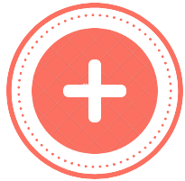
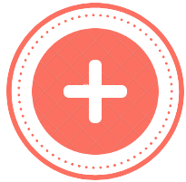

Photos in the dark

02 May 2022
A step-by-step guide on creating a multi-image uploader using Laravel, JavaScript & Tailwind.


 

I'm a student of Coding in Dev.F and I'm looking forward to getting the tools I need to get a great job. I enjoy dancing, restoring old gaming consoles and listening to all kinds of music.
02 May 2022
A step-by-step guide on creating a multi-image uploader using Laravel, JavaScript & Tailwind.